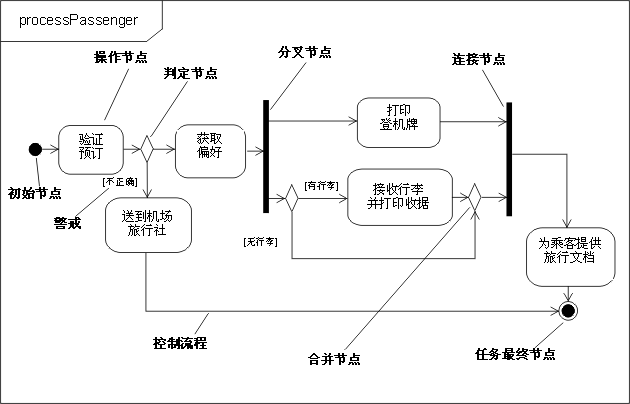

| UML 1.x 和 UML 2.0 之间的区别 |
 |
|
主题概述本页描述 UML 1.x 和 UML 2.0 之间与 RUP 上下文相关的一些区别 其中并不会涉及全部 UML（[UML04]）基础结构和超结构规范，而只会概述相关的 UML 功能。另外，请参阅 [RUM05] 和 [ERI04] 获得更多信息。 请注意“UML 1.x”指 UML 1.0 到 UML 1.5 的版本。 UML 2.0 功能集中图示方面最重大变化在行为图中，特别是活动图和交互图集（请参阅下面的活动图、时序图和通信图）。 “组合结构图”和“结构类”也是 UML 2.0 的新功能（请参阅下面的组合结构图）。 活动图简介活动的建模在 UML 2.0 中已经经历了完整的修订。也许可以这么说，（至少对偶然使用）效果和外观可能非常相似，这取决于 UML 1.5（以及更早版本）中建模的形式，根据 UML 1.x 规则构造的模型的严格解释和执行结果可能与 UML 2.0 中不同。因此，我们提醒建模人员注意，即使 UML 1.x 活动模型不作更改似乎对 UML 2.0 也可以接受，但它可能无法同样执行 － 特别是在更复杂的模型涉及并行的情况下。有关更多信息，请参考 [UML04]。 如 [UML04] 所定义，活动（将显示在活动图中）是行为的指定，也就是对下级单元（它的每个元素就是动作）的协调排序。我们可能已经把 UML 1.x 活动图中的单个可执行步骤称为活动或活动状态，或者正确地称为操作状态：现在，UML 2.0 活动中的这些步骤被称为操作 － 这些操作在活动中不再进一步分解。状态的含义在 UML 2.0 中已经消失，因为活动不再是一种状态机（在 UML 1.x 中为状态机）。在 UML 2.0 中，活动由节点组成（操作就是一种节点）；其他的是控制节点和对象节点，在下面有进一步的描述。 流程语义 活动现在有类似于 Petri Net 的语义，基于标记流程，其中一个节点的执行通过定向的连接（称为流程）影响另一个节点的执行。标记包含对象或控制点，在这些连接的节点间流动。节点可以在其输入标记上指定的条件得到满足时开始执行，完成执行后，它在其输出流程上提供标记，使下游节点可以开始执行。连接节点的流程进一步改进到控制和数据或对象流程中；而且，和您可能期望的一样，控制标记在控制流程间移动，数据或对象标记在对象流程间传送。 这与 UML 1.x 中的情况不同，在 UML 1.x 中，节点是互相之间有转换的状态（或假状态），这限制了流程的建模。 并行建模 UML 2.0 的建模功能允许不受限制的并行性：在 UML 1.x 中，整个状态机（活动）执行“运行到完成”步骤，而 UML 2.0 功能在处于最完整的形式时允许一个活动的多次调用，该活动将由单个执行进行处理，其中多个标记流在活动的各个节点和流程连接器间移动。这就又给建模人员增加了一个负担：要注意竞争状态和交互。 另外，请参阅下面的语义差别部分，获得关于对标记流程语义的并行建模带来什么影响的另一个示例。 符号表示法操作和控制节点 下图说明了许多 UML 2.0 元素，用 UML 2.0 常用的方法表示，并且在左上角有一个矩形框架，而在象限中又有名称。将该图与它下面的 UML 1.x 版本进行比较。它们的外观相似（允许使用不同的方向和颜色约定 － 这对语义没有重要影响），并且该模型在 UML 1.x 和 UML 2.0 中的执行结果相同。请注意，控制节点 － 决策、合并、派生、连接、初始和最终 － 看上去和 UML 1.x 中同等的节点相象，控制流程用带箭头的线条显示，这样的线条和 UML 1.x 中的转换箭头外观相似。  UML 2.0 示例活动图
UML 1.x 示例活动图 UML 2.0 有另一个称为流程终点的控制节点（显示在取自 [UML04] 的下面一个图中），该节点用作“活动终点”节点的替代节点来终止某个流程。它是必需的，因为在 UML 2.0 中，当控制达到“活动终点”节点的任何实例时，整个活动（包括所有流程）会被终止。“流程终点”只是终止它所连接的流程。这在 UML 1.5 中不是问题，因为存在着“运行到完成”语义；但因为 UML 2.0 中并行性不受限制，您可能不希望停止所有流程和造成所有标记被破坏。
流程终点控制节点 对象节点 UML 2.0 活动建模还支持对象节点。对象节点是一种活动节点，它表示可能在特定的活动点提供特定分类器的（可能处于特定状态的）实例（例如，作为操作的输出或输入）。对象节点充当容器，特定类型的对象（可能处于特定状态）可能会流入或流出这些容器。已经为 UML 2.0 中的对象节点引入了新的表示法（称为 pin）。pin 代表操作的输入或输出，绘制为连接到操作矩形的小矩形，如下所示。
Pin 表示法 箭头代表对象流程。这些是实线，与 UML 1.x 中用于向对象流状态的转换和从对象流状态的转换的虚线不同。当操作上的输出 pin 与所连接操作上的输入 pin 的名称相同时，输出和输入 pin 可能会被合并以提供一个独立的 pin。这又使它看上去与 UML 1.x 中的对象流程类似。
独立 pin 表示法 结构化的活动节点 结构化的活动节点是一个可执行的活动节点，可能拥有到下级活动节点的扩展。 下级节点仅属于一个结构化的活动节点，但是它们可以嵌套。它可能连接了控制流并连接了 pin。结构化的活动节点描绘为虚线、圆角的矩形，内含它的节点和流程，而在顶部显示关键字 <<结构化>>。 活动分区 活动分区是将活动的节点和流程根据一些共享属性进行分组的方式。在 UML 1.x 中，泳道（被认为是分区）的概念在活动图中用来根据一些标准将操作分组 － 例如，在业务建模中，按执行组织进行分组。UML 2.0 将这种分区功能扩展到活动图的多个维度，并提供了附加的符号表示法，这样（举例来说）单个操作就可以用它们所属分区的名称进行标注。下图显示根据 UML 2.0 将出现的多维泳道的示例，其中，操作是根据位置和职责进行分组的。
使用二维泳道的活动分区示例 语义差别 UML 2.0 活动模型的标记流程语义以及不受限的并行性要求建模人员熟悉 UML 1.x，在构造新模型或转换现有模型时小心行事，以确保能得到期望的执行结果。例如，在上面的 processPassenger 示例中，登机的乘客可能是经常乘飞机旅行的，在这种情况下，代理人就需要向乘客奖励频繁乘坐公里数，如下面在 UML 1.x 模型片段中所显示的那样。
使用受保护的并发转换 将防护装置放在可选的并发转换上意味着：在 UML 1.x 中，转换永远也不会开始，而行为就如同转换并没有显示在模型中一样；相应地，当另外两个转换完成时，执行在连接后继续。在 UML 2.0 中，如果乘客不是频繁乘坐飞机旅行的人，那么就不会有标记达到这个流程上的连接，而且模型会停止，因为连接在其所有流程上都等待标记的出现，它才能继续下去。模型应该构造成如下所示的样子，条件按照与行李处理流程相同的方式处理。只要您能确保没有下游连接依赖于并发流程，就可以把防护装置直接放在并发流程上。
使用决策和合并节点，而不是受保护的并发流程 通信图UML 1.x 中的协作图在 UML 2.0 中已重命名为通信图。与以前的版本并没有语义上的区别。通信图是基于以前的协作图的，它仍然是一种交互图。 符号表示法通信图重点强调生命线之间的交互。它显示为这样的图：图的节点是一些矩形，这些矩形代表结构化的类的各个部分或协作的各个角色。围绕着图的是矩形框架，名称在左上角的象限中，这与以前的 UML 版本相比是符号表示法上的变化。
通信图的示例：
订购系统的通信图示例 组件在 UML 2.0 中，组件用符号表示为不带两个突出矩形的类符号，如 UML 1.4 中所定义。取而代之的是 <<组件>> 构造型。也可以选择在组件符号右上角仍使用类似于 UML 1.4 图标的组件图标。 UML 2.0 将组件定义为结构化的类，意味着在组件内部结构（部件）中元素之间的协作可以进行建模，来更好地描述它的行为。部件之间通过连接器连接。 端口可以用于通过组件被提供的和被要求的接口，来提高组件的封装级别。有关更多信息，请参阅概念：组件和概念：结构化类。 较早版本的 UML 定义了称为子系统的特殊建模元素，该元素是作为具有接口的包来建模的。组件还用于在物理体系结构中构造模型。在 UML 2.0 中，组件被广义使用，在模型的所有部件中都用到了。这样，就没有必要再让特别的元素对子系统进行建模了。在 UML 1.x 中用于子系统实现和子系统规范的独立象限在 UML 2.0 中已经成为了应用于组件的独立的构造型（分别为 <<realization>> 和 <<specification>>）。另一个新的组件构造型是 <<subsystem>>，指示用来为大型组件建模。 RUP 建议使用组件对子系统建模（有关更多信息，请参阅指南：设计子系统）。 组合结构图体系结构在其元素之间可以有特定的协作，而在设计时不一定要知道部件和连接器。典型的类图（以及其他静态图）将不足以清楚地代表适用于那些元素的角色、职责、关系和规则。 为了解决这些问题，UML 2.0 已经添加了组合结构图。它可以描绘结构化类（例如组件或类）的内部结构，包括结构化类与系统其余部分的交互点。它显示联合执行包含结构化类的行为的部件配置。 组合结构图用于画出结构化类的内部内容（有关组合结构图的详细信息以及示例，请参阅概念：结构化类）。 时序图UML 2.0 有几个新的时序图功能：
有了代表片段、交互发生和循环的新功能，时序图就可以两种形式使用：
下图显示对不同场景进行建模的时序图的示例。其他片段显示两个可能的其他消息排序（取决于条件是否得到满足）：
示例：显示分支、循环和条件的时序图 |

© Copyright IBM Corp. 1987, 2006. All Rights Reserved. |